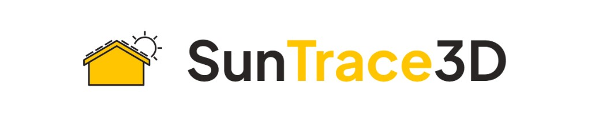

Partners
We partner with products and services that pair well with TiltSync — especially when you want planning and analysis before you climb the ladder.

In a rapidly growing solar energy market, the lack of accessible and accurate shadow analysis tools presents a significant barrier for homeowners, solar installers, and real estate developers. Traditional methods are costly, time-consuming, and often yield outdated results.
SunTrace3D revolutionizes solar analysis by offering a user-friendly, web-based platform that delivers instant, photorealistic 3D models of any location on Earth. With just a few clicks, users can visualize sunlight exposure, simulate shadows in real-time, and assess the potential energy yield from solar panels.
- Real-time shadow simulation — Visualize shadows throughout the day and year to understand sunlight exposure.
- Virtual solar panel placement — Instantly analyze shading effects and estimate energy production for any rooftop configuration.
- Installation cost analysis — Get detailed cost breakdowns and payback period calculations tailored to your location.
- PDF site report generation — Create professional reports with all relevant data for client proposals.
Targeting a vast audience that includes homeowners, solar installers, real estate platforms, and architects, SunTrace3D is poised to capture a significant share of the $1.2 trillion solar market projected by 2030. With its innovative approach, SunTrace3D not only addresses a critical gap in the solar industry but also empowers users to make informed decisions about solar energy solutions.